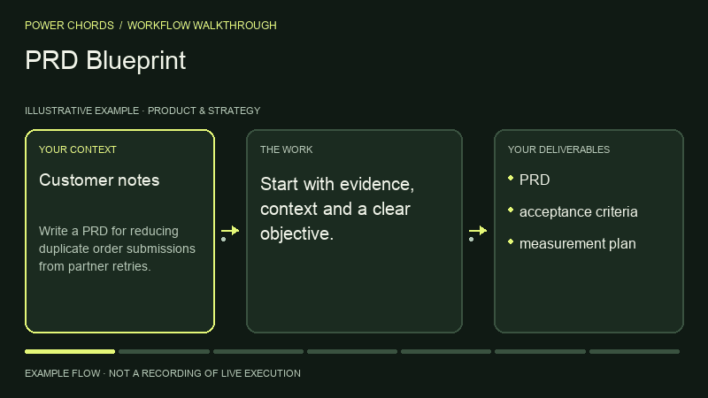

Product & Strategy · BY POWER CHORDS
PRD Blueprint
Draft a product requirements document.
Your context. A result to review.
- Published by
- Power Chords
- Use with
- Codex workspace
Run in your local Codex workspace, or use the instructions with another equipped agent. Review results before acting. - Bring it to
- Claude Code · Codex · Cursor · Gemini CLI · other agents via Markdown
- Result
- PRD
This week’s update
Refined the evidence and permission checks to apply when external product or review workflows support a PRD.
Compared with the last published version. Earlier entries are dated reviews, not deployment records.
Earlier weekly reviews
Clarified permission checks for external drafting tools and when to rerun checks after editing a specification.
SEE THE PROCESS
From context to prd.
An illustrated example of the workflow.

THE WORK, DEFINED
Inputs and outputs
What you bring
- Customer notes
- constraints
- desired outcome
- baseline metrics
What to review
- PRD
- acceptance criteria
- measurement plan
WORKFLOW DIAGRAM
How Blueprint works.
Fill gaps in evidence or access before continuing.
- INPUT
Customer notes · constraints · desired outcome · baseline metrics
- STEP 01
State problem and target users
- STEP 02
Convert observations into evidence-backed requirements
- STEP 03
Define non-goals and dependencies
- STEP 04
Specify success metrics and acceptance criteria
- STEP 05
List decisions and gaps for review
- REVIEW
No unverifiable metrics or fake stakeholder approvals
- OUTPUT
PRD · acceptance criteria · measurement plan
Your approval → Review the work before publishing, sending, deploying or changing external systems.
TRY IT WITH YOUR CONTEXT
One prompt. Your agent.
Add your task and inputs. Your agent needs these instructions and the right tools.
Use Power Chords PRD Blueprint. Write a PRD for reducing duplicate order submissions from partner retries. Return PRD, acceptance criteria, measurement plan. Show supporting evidence, assumptions, validation and next actions. Ask for my approval before any external write or publication.
FINISH WITH CONFIDENCE
What a good result needs.
- The outputs match your brief.
- Claims have sources. Assumptions and gaps are labelled.
- No unverifiable metrics or fake stakeholder approvals.
- Tool results come from real execution.